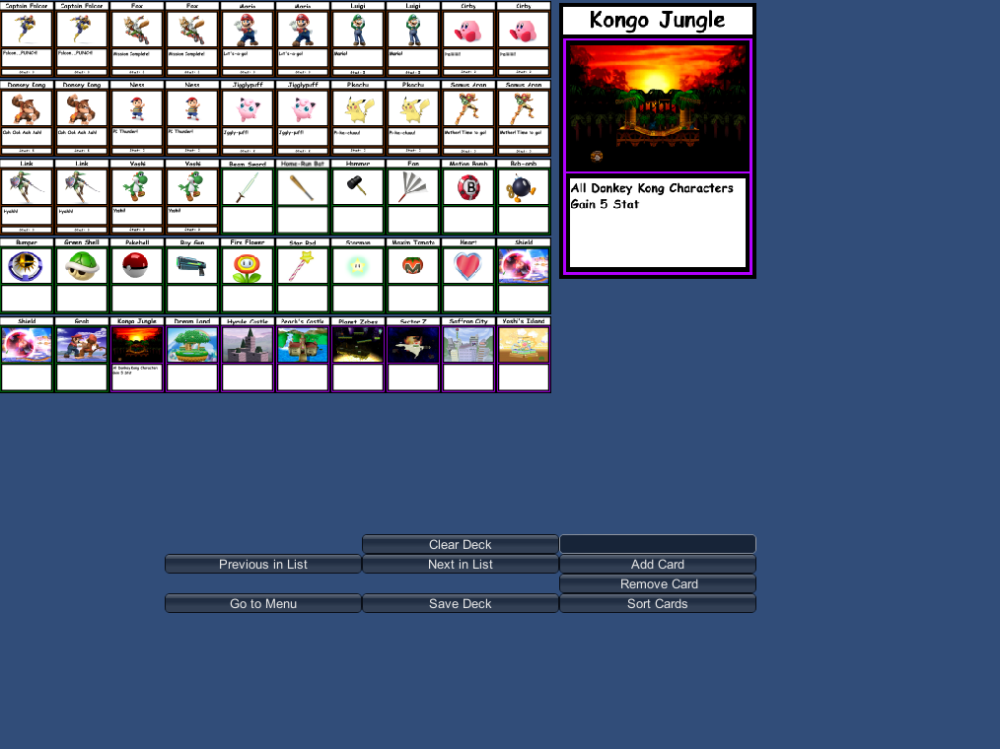
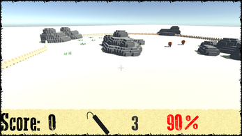
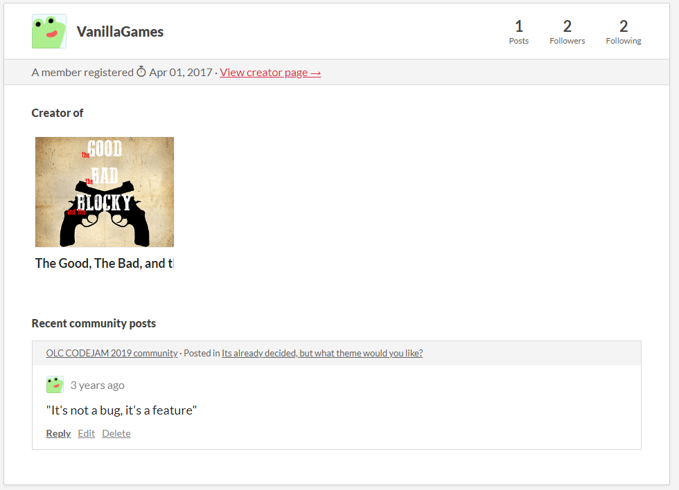

This is a prototype I created back in 2015 as my goal was to create a CCG in the Unity3D game engine
This prototype is very rudimentary, however it has a working gameplay against a computer player, and a deck building system.


Click Here to download this project!
This is a game I developed in 2017 as a New years resolution: To publish a game in Unity3D before I went to College.


I created all of the model assets in the program MagicaVoxel, and I created the UI using the (then) new Unity5 UI system.
Click Here to download this project!
This project is one of my most proud ones: a complete translation of YouTuber Javidx9's "OneLoneCoder" game engine.
The OneLoneCoffee engine is a bit of an inside pun, as it is programmed in Java instead of the original C++.
Here is an example of a program I recreated using my OneLoneCoffee engine
Click Here to download this project!
here is a series of games I created in the Roblox game engine. These are some of my highest quality work, and have gone to shape my skillset as a developer.
BLOX - Grand Prix, a Kart Racing game inspired by Mario Kart, this won 3rd Place in Dubit Ltd.'s Metaverse Game Jam!
R2 - All Elite Wrestling, the last game I worked on that was Wrestling Related before I went to new things.
WWE 2K17 - A wrestling inspired game, and the first Roblox Game I ever made